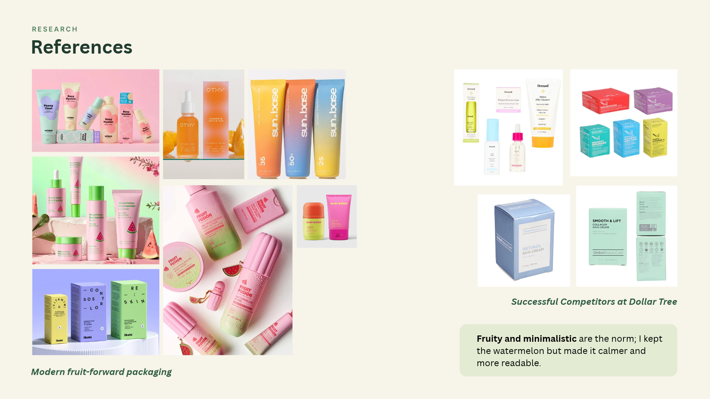

b.pure Watermelon Skincare Collection
Brand Refresh & Packaging Redesign
This project redesigns b.pure's existing Glow Up skincare packaging, refreshing the watermelon-inspired toner, serum, and moisturizer while retaining the established product range.
.jpg)
Context
The existing Glow Up line includes toner, serum, and moisturizer sold at Dollar Tree for $1.25.
Insight
The original packaging needed to build trust and make product benefits easy to scan, without leaning on familiar "dupe" aesthetics.
Concept
Refresh the existing b.pure packaging with a distinct watermelon-inspired visual language, confident typography, and clear hierarchy—not a brand created from scratch.
Execution
Redesigned the existing toner, serum, and moisturizer packaging, clarifying product names and key benefits while retaining the original dielines and package structure.


Research
Budget skincare has to earn trust fast. I studied the typical Dollar Tree customer and what other affordable brands get right, and used both to shape the direction for b.pure's watermelon skincare line.


.png)
Packaging Ideation
The packaging needed to read immediately as a watermelon skincare line. The original window left little room for branding or product information, so I explored shifting it to the side or removing it entirely and using product imagery instead.


Programs Used
Adobe Photoshop and Illustrator